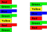
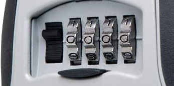

For this programming challenge there are two problems, both closely related to topics in this class (using specific algorithms we have discussed). As before, you must submit your programs that pass automated tests, but programming style doesn’t matter. I will run your programs through a plagiarism detector, but other than that I will not consider your sourcecode at all – only whether it passes the tests.
Challenge 1: Knopification
You have been hired by your local parks and recreation department to organize documents. There are two binders that contain similar material, all meticulously color-coded, but at various times extra pages might have been inserted into just one of the binders, or pages might have been mistakenly removed from the other. Your job is write a program to figure out where to put color-coded tabs on pages (matching the color of the page, naturally) in each binder so that both binders have the same color sequence on the tabs. If you do a good job with this careful and structured organization, they say you have “Knopified” the binders, and the process is referred to as “Knopification.” More tabs is always better, so your goal is to maximize the number of tabs in your solution.
For example, consider the problem illustrated below, where one binder is shown on the left, and the other on the right. The tabs selected in our solution are shown in the picture as well. Even though the binders have slightly different page orderings, they both end up with four tabs that are Green, Blue, Green, and then Red. Furthermore, there is no way to put on 5 matching tabs in both binders.

The input to your program will consist of two integers \(n_1\) and \(n_2\) on the first line, saying how many pages are in each binder. You are guaranteed that each value are at least 1 and no more than 990. The next \(n_1\) lines give the color of each page in binder 1, and the \(n_2\) lines following that give the colors of the pages in binder 2. Colors are arbitrary strings, but will always be single words with no spaces (don’t assume they make sense for any reason – “ab425aslgkj-bart45” is a perfectly legal color name).
Your program should print out the sequence of colors in your solution. Note that solutions might not be unique, so any valid solution that maximizes the number of tabs will be accepted. It is also possible that the solution is empty, if the binders contain entirely different colors, and so your output would just be empty in that case (don’t print anything at all).
For example, the input for the problem illustrated above would be
7 6
Red
Green
Blue
Green
Yellow
Red
Green
Green
Yellow
Blue
Red
Green
RedFor the solution illustrated above, the output would be
Green
Blue
Green
Red
Challenge 2: Don’t kill us all!
The parks and rec department has a new challenge for you! They have discovered that a previous, evil employee has left valuable items locked in a room. The lock is a typical combination lock, with dials for each digit of the combination, similar to this one (your lock may have more than four dials!):

You can move only one digit at a time, and you are given a starting setting and the desired final setting. There is a catch, however: The former employee built in a booby-trap to secure the lock against trying random combinations, and there are combinations that will result in a large amount of explosives going off and killing everyone in the area. It is best to avoid these combinations.
Fortunately, the list of all bad combinations was found in a nicely organized binder, so you know all of the bad combinations. Your job is to find the shortest sequence of combination settings that gets you from the initial setting to the final setting, moving one wheel one position at a time, while avoiding hitting any of the explosive settings.
For example, if the lock is currently at “1234” and the goal is “1236,” but “1235” is an explosive setting, you could get use the following sequence “1234,1244,1245,1246,1236” to open the lock in 4 moves without killing anyone. Notice that wheel settings wrap around, so if the target were “1239” then you could just turn the final wheel the other direction: 1234,1233,1232,1231,1230,1239.
Input to this problem consists of an integer \(w\) on the first line, giving the number of wheels in the lock, and then \(w\)-digit strings on the following two lines giving the starting and final combinations. You are guaranteed that \(1\leq w\leq 6\). After this is an integer \(n\) that says how many explosive combinations there are, followed by \(n\) lines with a different explosive combination on each line. You are guaranteed that neither the starting nor final combinations are explosive.
You are to output a sequence of moves to open the lock that is as short as possible, without setting off an explosion. If it is impossible to do so, print the word “Impossible” on a line by itself. Note that there may be multiple solutions with the same shortest length, and any valid solution of the correct length will be accepted.
Sample Input 1: In this first sample input, all first moves except one are blocked off, so your initial options are very limited.
3
123
125
5
124
133
113
223
023Sample Output 1: The following is a valid output for this example. Note that this is more complicated than the solution that just rolls the last digit back 9 times, but it’s still a valid solution with the minimum number of moves!
123
122
022
922
923
924
925
025
125Sample Input 2: For a second sample input, we block off the last remaining initial move:
3
123
125
6
122
124
133
113
223
023Sample Output 2: The output in this case must be
Impossible